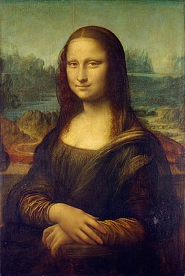

The Mona Lisa (/ˌmoʊnə ˈliːsə/ MOH-nə LEE-sə; Italian: Gioconda [dʒoˈkonda] or Monna Lisa [ˈmɔnna ˈliːza]; French: Joconde [ʒɔkɔ̃d]) is a half-length portrait painting by Italian artist Leonardo da Vinci. Considered an archetypal masterpiece of the Italian Renaissance, it has been described as "the best known, the most visited, the most written about, the most sung about, the most parodied work of art in the world".The painting's novel qualities include the subject's enigmatic expression,the monumentality of the composition, the subtle modelling of forms, and the atmospheric illusionism. The painting has been definitively identified to depict Italian noblewoman Lisa Gherardini,[9] the wife of Francesco del Giocondo. It is painted in oil on a white Lombardy poplar panel. Leonardo never gave the painting to the Giocondo family, and later it is believed he left it in his will to his favored apprentice Salaì. It had been believed to have been painted between 1503 and 1506; however, Leonardo may have continued working on it as late as 1517. It was acquired by King Francis I of France and is now the property of the French Republic. It has been on permanent display at the Louvre in Paris since 1797
Read more...


The Persistence of Memory (Catalan: La persistència de la memòria) is a 1931 painting by artist Salvador Dalí and one of the most recognizable works of Surrealism. First shown at the Julien Levy Gallery in 1932, since 1934 the painting has been in the collection of the Museum of Modern Art (MoMA) in New York City, which received it from an anonymous donor. It is widely recognized and frequently referred to in popular culture,[1] and sometimes referred to by more descriptive titles, such as "Melting Clocks", "The Soft Watches" or "The Melting Watches". Read more...